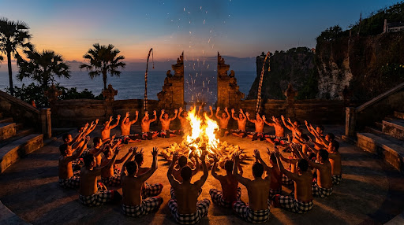
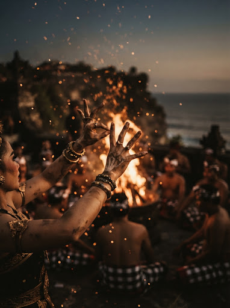
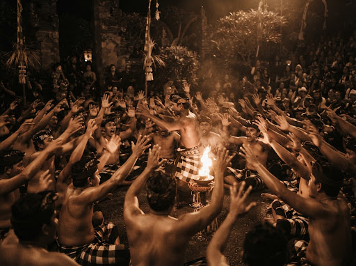
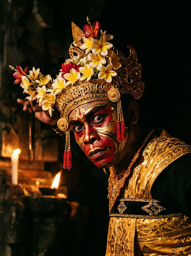

01 / Pemahat sakral
01 / Pemahat sakral
Gelungan & kain pradaEkspresi karakter
ksatria bermahkota kencana sakral.
 KECAK BALISANGHYANG HERITAGE
KECAK BALISANGHYANG HERITAGE
Tujuh puluh suara bersahut-sahutan dalam simfoni poliritmik tanpa instrumen gamelan, menggema dari bibir tebing laut Pura Luhur Uluwatu.
01 / Pemahat sakral

02 / Lingkaran sakral · Uluwatu 70 penyuara
03 / Mudra & bara
“Dada manusia menjadi ruang resonansi gaib, berdetak selaras dengan deburan ombak Samudra Hindia.”
— Walter Spies & Wayan Limbak
Berakar dari tradisi kuno Sanghyang Dedari, lingkaran konsentris para pelantun merajut suku kata perkusi vokal untuk menyalurkan keseimbangan spiritual dan menolak bala.
Menyerupai dentuman gong perunggu upacara, meneguhkan lingkaran spiritual.
Dentuman “cak-cak-cak” sinkopasi yang tiada henti memicu kedalaman trans spiritual.
Desisan tajam dan aksen cepat membentuk dinding harmoni tanpa jeda.
Pengisah narasi utama lakon.
Pelantun kidung melodi Sanskerta Kawi.

Di tengah pusaran vokal menggelora, terbentang epos Hindu agung: Dewi Sinta diculik oleh raja raksasa Rahwana ke istana emasnya di Alengka. Saat pasukan simian Hanoman sang Kesatria Kera Putih menerobos benteng pertahanan musuh untuk menghantarkan cincin Prabu Rama.
Para penari melatih pernapasan yogis, menjaga irama vokal tetap tajam tanpa henti atau kelelahan.
Dikelilingi sabut kelapa yang membara, penari memasuki alam trans mendalam, tak tersentuh panas bara api.
Dari pelita hening pembuka di kala temaram hingga letupan klimaks tendangan api penutup. Simfoni vokal tujuh puluh pria bergerak serasi dengan detik-detik terbenamnya surya.
Adegan pembuka berupa ritual pembersihan arena dan pemujaan keselamatan. Puluhan penari pria duduk melingkar, memanjatkan doa bersama pemangku, lalu membangun keharmonisan ritme vokal cak-cak-cak secara polifonik yang menjadi musik pengiring alami sepanjang pertunjukan.
Didirikan pada abad ke-11 oleh Mpu Kuturan dan kemudian disucikan oleh Dang Hyang Nirartha, Uluwatu merupakan salah satu pura Sad Kahyangan penjaga utama pulau Bali, menepis energi negatif dari arah barat daya Samudra Hindia.
Pecatu, Kuta Selatan, Kabupaten Badung, Bali
Eksplorasi interaktif tentang harmoni suara poliritmik manusia murni, kesucian api pembersih malapetaka (Sanghyang), dan filosofi dualisme kosmik Rwa Bhineda.
Kecak lahir dari rahim tari trans kuno Sanghyang Dedari. Paduan suara poliritmik yang memukau kemudian berkembang menjadi dramatari sebagai pengantar kisah epik Ramayana.
Pelita menjadi pusat pusaran arena, melambangkan Dewa Agni—entitas pemurni kekotoran dan malapetaka. Dalam kesunyian, penari memasuki kesadaran spiritual.
Formasi konsentris bertingkat merefleksikan geometri Cakrawala, harmoni kesadaran manusia dan kosmologi Trimurti.
Klik setiap lapisan vokal di bawah ini untuk melihat resonansi dan peran masing-masing dalam ritme kotekan akapela.
Mendengungkan nada rendah yang mensimulasikan tabuhan gong kempur secara siklikal, menjaga trance melingkar.
““Suara manusia adalah genta paling murni; saat ratusan dada bergetar serentak, batas antara dunia manusia dan kahyangan melebur dalam nyala api.”
— Filosofi Ageng Sanghyang Bali —
Kecak adalah dramatari Bali tanpa iringan gamelan logam. Keutuhan poliritmik murni bertumpu pada diafragma dan rongga vokal manusia.
Kekuatan vokal murni · 100% akapelaSebagai pertunjukan di mandala suci Pura Luhur Uluwatu, penonton mengenakan selendang kuning dan kain kamen sarung.
Penghormatan sakral · NiskalaBunga kamboja diperciki Tirtha suci dan bara api menjadi bagian dari perjalanan sakral yang menghubungkan manusia dan alam.
Pembersihan cinta & jiwa